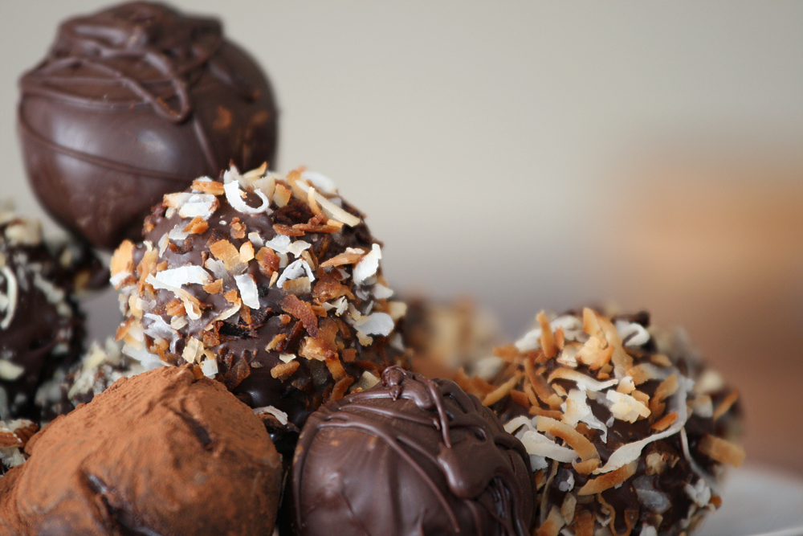

High Class Oreo Truffles
Odin Recipes Home

Image Source: Wikipedia.org
Description:
These delicious truffles are super easy to make - no confectionary degree required. Your friends will think you spent years at a confectionary school in France when you serve these at your next party.
Ingredients:
- 1 package oreos
- 1 8 oz package cream cheese
- 1 12 oz bag chocolate chips (or other chocolate of choice)
Steps:
- Combine the oreos and cream cheese in a food processor. It is helpful to cut the cream cheese into several chunks prior to adding to the bowl of the food processor.
- Pulse the oreos and cream cheese together until you have a uniform mass. Scoop out tablespoonfuls of the mixture and roll into balls. Place the balls on baking sheet lined with parchment paper and refrigerate until firm, about 1 hour.
- Melt the chocolate chips in the microwave. Be careful, do not overheat the chocolate! You want the chocolate to be just barely melted. The best method is to stir frequently. Microwave for 30 seconds. Stir well. Then, microwave for 10 seconds, stir for 30 seconds. Repeat until the chocolate is melted. At first, you might not see any progress. However, if you microwave longer then 10 seconds, you seriously risk burning the chocolate.
- Using forks (or your fingers) dip the oreo balls in the melted chocolate and place on a new piece of parchment to set. Dust with cocoa powder or cocnut flakes, if you are feeling fancy. Once all the balls are coated, move them to the fridge until you are ready to serve.
- Enjoy!